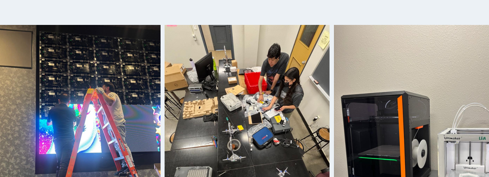

MY EXPERIENCE
Experience
Undergraduate Assistant II
UTEP Learning Environments
- Installed and upgraded AV equipment in 75+ classrooms, providing technical support and troubleshooting for 200+ classrooms.
- Assisted faculty and students with AV systems, 3D printing, laser cutting, and woodworking equipment.
- Managed 3D printer operations, equipment maintenance, and inventory using cloud software and Airtable.
- Conducted hands-on workshops for 200+ students and faculty each semester.

Student CORE — Student Coordinator of Operational Resources and Experience
UTEP Learning Environments
- Installed and upgraded AV equipment in 75+ classrooms, providing technical support and troubleshooting for 200+ classrooms.
- Assisted faculty and students with AV systems, 3D printing, laser cutting, and woodworking equipment.
- Managed 3D printer operations, equipment maintenance, and inventory using cloud software and Airtable.
- Conducted hands-on workshops for 200+ students and faculty each semester.